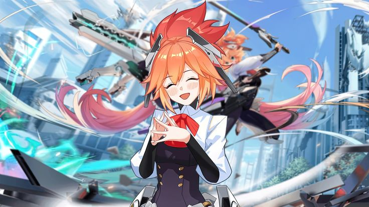

Мобиус Гандониус(Андрей)
Мой друг Мобиус – настоящий воин в Mobile Legends: Bang Bang. Он оттачивает своё мастерство на одном из самых сложных героев – Фанни. Несмотря на высокий порог вхождения, он уверенно держит 49% побед, показывая отличную игру и потрясающие мувы. Его контроль тросов, грамотные заходы в бой и точные киллы делают его опасным соперником для врагов и ценным союзником для команды. Хотя Фанни требует невероятной реакции и механики, Мобиус не сдаётся, продолжая совершенствовать свою игру. Возможно, совсем скоро он выйдет на новый уровень и превратится в настоящего монстра на этом герое! 💪🔥
О боже это же мобиус и темка
Мобиус и Тёмка — не просто напарники в Mobile Legends: Bang Bang, а настоящая команда во всех смыслах. Они всегда играют вместе, поддерживая друг друга в победах и поражениях, а их слаженность на поле боя делает их дуэтом, с которым стоит считаться. Хотя их общий процент побед составляет 37%, для них важнее не цифры, а совместное время, проведённое в игре и за её пределами. Тёмка всегда прикрывает Мобиуса, создавая для него идеальные условия, чтобы забрать Черепаху, а тот, немного стесняясь, благодарит его и даже краснеет. Их связь выходит далеко за рамки игры — они не просто друзья, а партнёры по жизни, делящие не только радость побед, но и совместный отдых, объятия и ночи, проведённые вместе. Их отношения полны доверия, тепла и искренней привязанности, что делает их действительно неразлучными. 💙